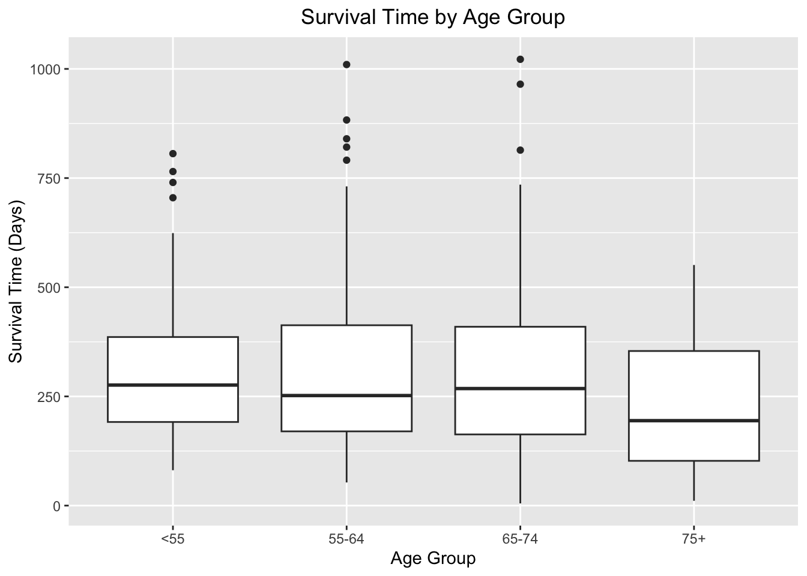
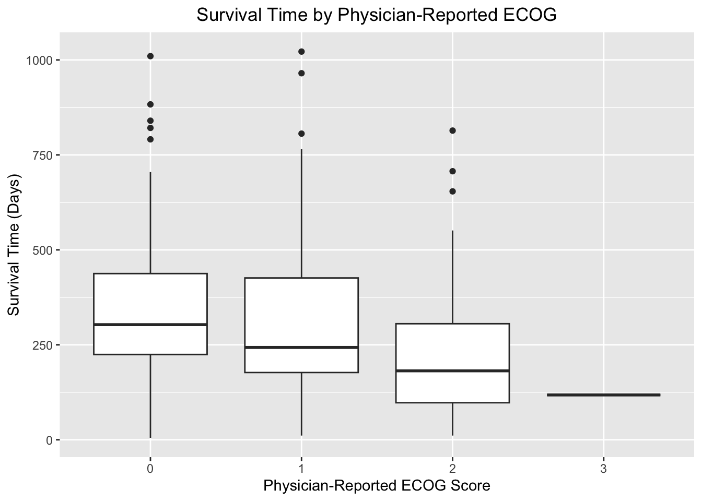
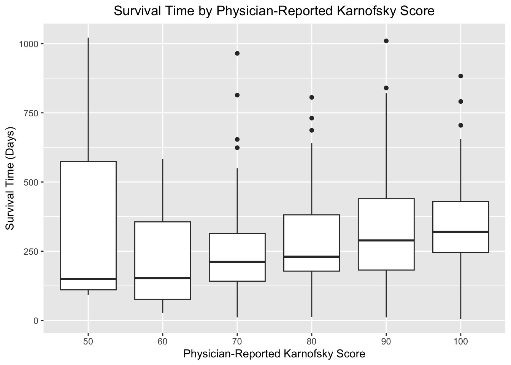

count_missing_vals pct_missing_vals
institution 1 0.4
survival_days 0 0.0
mortality_status 0 0.0
age 0 0.0
sex 0 0.0
ph.ecog 1 0.4
ph.karno 1 0.4
pat.karno 3 1.3
cals_consumed 47 20.6
weight_loss 14 6.1
age_group 0 0.0Functional Status as a Predictor of Survival in Advanced Lung Cancer
Introduction
While advanced age is considered an important risk factor in cancer care, age alone may not fully explain a patient’s overall health status or ability to tolerate treatment. The following report analyzes data from 228 patients with advanced lung cancer to evaluate the relationship between age, functional status, and survival outcomes.
Specifically, this analysis explores whether measures of functional status, including ECOG and Karnofsky performance scores, are more closely associated with survival than age alone. Conducting such an analysis may help clinicians gain a deeper understanding of prognosis, and support more data-informed decision-making regarding treatment planning and disease management.
By examining both demographic and functional measures, this analysis seeks to identify which patient characteristics may serve as the most meaningful indicators of survival in advanced lung cancer.
Data & Methods
This analysis uses data from 228 patients with advanced lung cancer sourced from the lung dataset in the R survival package. Variables examined include age, survival time (days), ECOG performance status, physician- and patient-reported Karnofsky scores, caloric intake, and weight loss. Patients were categorized into four age groups: younger than 55, 55–64, 65–74, and 75 and older.
Although missing data was low overall, caloric intake exhibited the highest proportion of missing values (20.6%). Missing values were not imputed and were excluded from analyses where appropriate to preserve the integrity of the original clinical data.
Missing Data Summary
Baseline Clinical Characteristics
Functional status appears to decline with age. Patients ages 75 years and older have higher ECOG scores, lower physician and patient reported Karnofsky scores, and a lower median caloric intake compared to younger groups. While the older patients also had shorter median survival times, survival differences across the younger age groups were less pronounced. This suggests that functional status may be a relevant indicator for clinical differences beyond age alone.
Code
df_lung_clean %>%
select(age_group,survival_days,ph.ecog, ph.karno, pat.karno, cals_consumed, weight_loss) %>%
tbl_summary(by=age_group) %>%
add_overall() %>%
bold_labels()%>%
modify_caption("**Table 1. Baseline Patient Characteristics by Age Group**")| Characteristic | Overall N = 2281 |
<55 N = 431 |
55-64 N = 851 |
65-74 N = 841 |
75+ N = 161 |
|---|---|---|---|---|---|
| survival_days | 256 (167, 399) | 276 (191, 390) | 252 (170, 413) | 268 (163, 415) | 195 (100, 357) |
| ph.ecog | |||||
| 0 | 63 (28%) | 13 (30%) | 28 (33%) | 18 (21%) | 4 (25%) |
| 1 | 113 (50%) | 26 (60%) | 40 (48%) | 43 (51%) | 4 (25%) |
| 2 | 50 (22%) | 4 (9.3%) | 16 (19%) | 22 (26%) | 8 (50%) |
| 3 | 1 (0.4%) | 0 (0%) | 0 (0%) | 1 (1.2%) | 0 (0%) |
| Unknown | 1 | 0 | 1 | 0 | 0 |
| ph.karno | |||||
| 50 | 6 (2.6%) | 0 (0%) | 4 (4.8%) | 2 (2.4%) | 0 (0%) |
| 60 | 19 (8.4%) | 3 (7.0%) | 3 (3.6%) | 10 (12%) | 3 (19%) |
| 70 | 32 (14%) | 3 (7.0%) | 10 (12%) | 16 (19%) | 3 (19%) |
| 80 | 67 (30%) | 13 (30%) | 26 (31%) | 22 (26%) | 6 (38%) |
| 90 | 74 (33%) | 16 (37%) | 28 (33%) | 27 (32%) | 3 (19%) |
| 100 | 29 (13%) | 8 (19%) | 13 (15%) | 7 (8.3%) | 1 (6.3%) |
| Unknown | 1 | 0 | 1 | 0 | 0 |
| pat.karno | |||||
| 30 | 2 (0.9%) | 0 (0%) | 1 (1.2%) | 1 (1.2%) | 0 (0%) |
| 40 | 2 (0.9%) | 0 (0%) | 0 (0%) | 2 (2.4%) | 0 (0%) |
| 50 | 4 (1.8%) | 0 (0%) | 1 (1.2%) | 2 (2.4%) | 1 (6.7%) |
| 60 | 30 (13%) | 5 (12%) | 11 (13%) | 10 (12%) | 4 (27%) |
| 70 | 41 (18%) | 3 (7.0%) | 16 (19%) | 18 (22%) | 4 (27%) |
| 80 | 51 (23%) | 17 (40%) | 19 (23%) | 14 (17%) | 1 (6.7%) |
| 90 | 60 (27%) | 11 (26%) | 22 (26%) | 24 (29%) | 3 (20%) |
| 100 | 35 (16%) | 7 (16%) | 14 (17%) | 12 (14%) | 2 (13%) |
| Unknown | 3 | 0 | 1 | 1 | 1 |
| cals_consumed | 975 (635, 1,150) | 1,025 (825, 1,225) | 1,025 (730, 1,150) | 1,000 (538, 1,075) | 741 (426, 975) |
| Unknown | 47 | 9 | 20 | 14 | 4 |
| weight_loss | 7 (0, 16) | 4 (0, 13) | 9 (0, 16) | 7 (0, 20) | 8 (2, 13) |
| Unknown | 14 | 2 | 7 | 5 | 0 |
| 1 Median (Q1, Q3); n (%) | |||||
Survival by Age vs. Functional Status
Survival by Age
While older patients (75+) do exhibit lower median survival times, there are similarities in survival distribution across the middle aged groups, suggesting that age alone may not be the strongest indicator of survival.
Code
ggplot(df_lung_clean,
aes(x= age_group, y=survival_days)) +
geom_boxplot() +
labs(
title = "Survival Time by Age Group",
x= "Age Group",
y= "Survival Time (Days)") +
theme(plot.title = element_text(hjust = 0.5)
)
Survival by ECOG Score
While survival time appeared to decline as physician reported ECOG performance scores worsened, additional statistical analysis was conducted to determine whether functional status was more strongly associated with survival outcomes than age. A Kruskal-Wallis rank-sum test was used to evaluate differences in survival time across age groups. The results indicated there was no statistically significant difference in survival distribution between age groups, χ²(3)=3.04, p=.386.
A second Kruskal-Wallis rank-sum test was conducted to assess differences in survival time across ECOG performance status categories. In contrast, these results indicate a statistically significant difference in survival distributions across ECOG groups χ²(3)=14.16, p=.003. Patients with poorer functional status generally experience shorter survival times than those with better functional status.
Together, these findings suggest that functional status may be more closely associated with survival outcomes than age among patients with advanced lung cancer.
Code
ggplot (filter(df_lung_clean,!is.na(ph.ecog)),
aes(x=factor(ph.ecog), y=survival_days)) +
geom_boxplot() +
labs(
title= "Survival Time by Physician-Reported ECOG",
x= "Physician-Reported ECOG Score",
y= "Survival Time (Days)")+
theme(plot.title = element_text(hjust = 0.5))
Code
kruskal.test(survival_days ~ age_group,
data = df_lung_clean)
Kruskal-Wallis rank sum test
data: survival_days by age_group
Kruskal-Wallis chi-squared = 3.0353, df = 3, p-value = 0.3862Code
kruskal.test(survival_days ~ ph.ecog,
data = df_lung_clean)
Kruskal-Wallis rank sum test
data: survival_days by ph.ecog
Kruskal-Wallis chi-squared = 14.158, df = 3, p-value = 0.002698Survival by Karnofsky Score
To further evaluate the relationship between functional status and survival, physician-reported Karnofsky performance scores were also examined. Visualization of the data suggested that patients with higher Karnofsky scores generally experienced longer survival times than patients with lower scores. However, a Kruskal-Wallis rank-sum test did not identify a statistically significant difference in survival distributions across Karnofsky categories, χ²(5) = 10.10, p = .072. Although these findings did not meet the conventional threshold for statistical significance, the observed trend was consistent with the ECOG analysis and provides additional evidence that measures of functional status may be associated with survival outcomes.
Code
ggplot (filter(df_lung_clean,!is.na(ph.karno)),
aes(x=factor(ph.karno), y=survival_days)) +
geom_boxplot() +
labs(
title= "Survival Time by Physician-Reported Karnofsky Score",
x= "Physician-Reported Karnofsky Score",
y= "Survival Time (Days)")+
theme(plot.title = element_text(hjust = 0.5))
Code
kruskal.test(survival_days ~ ph.karno,
data = df_lung_clean)
Kruskal-Wallis rank sum test
data: survival_days by ph.karno
Kruskal-Wallis chi-squared = 10.102, df = 5, p-value = 0.0724Results and Limitations
The results from this analysis suggest that functional status may be more closely associated with survival outcomes than age among patients with advanced lung cancer. While survival did not differ significantly across age groups, significant differences were observed across ECOG performance status categories. These findings highlight the importance of considering a patient’s functional condition, rather than age alone, when evaluating prognosis. However, conclusions should be interpreted with caution due to the descriptive nature of the analysis.
Key Findings
The majority of patients in this cohort were between 55 and 74 years of age, with relatively few patients younger than 55 or older than 75.
Functional status generally declined with age, as older patients exhibited higher ECOG scores, lower Karnofsky scores, and lower median caloric intake at baseline.
Survival time did not differ significantly across age groups (χ²(3) = 3.04, p = .386), suggesting that age alone was not strongly associated with survival outcomes in this cohort.
Survival time differed significantly across ECOG performance status categories (χ²(3) = 14.16, p = .003), indicating that patients with poorer functional status experienced shorter survival times.
Physician-reported Karnofsky scores demonstrated a similar relationship with survival, although the association did not reach statistical significance (χ²(5) = 10.10, p = .072).
All findings suggest that functional status measures may provide more clinically meaningful information regarding prognosis than chronological age alone among patients with advanced lung cancer.